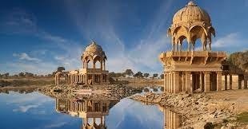

| Destinations | Details |
|---|---|
Statue of Unity  | The Statue of Unity is a statue of Indian statesman and independence activist Vallabhbhai Patel, who was the first deputy prime minister and home minister of independent India and an adherent of Mahatma Gandhi. |
Taj Mahal  | The Taj Mahal, is an ivory-white marble mausoleum on the right bank of the river Yamuna in the Indian city of Agra. It was commissioned in 1632 by the Mughal emperor Shah Jahan to house the tomb of his favourite wife, Mumtaz Mahal; it also houses the tomb of Shah Jahan himself. |
| Jaisalmer Fort  | Jaisalmer Fort is situated in the city of Jaisalmer, in the Indian state of Rajasthan. It is believed to be one of the very few "living forts" in the world, as nearly one fourth of the old city's population still resides within the fort. For the better part of its 800-year history, the fort was the city of Jaisalmer. |
Ladakh | Ladakh is a region administered by India as a union territory, and constitutes a part of the larger Kashmir region, which has been the subject of dispute between India, Pakistan, and China since 1947. |
Kerala | Kerala, a state on India's tropical Malabar Coast, has nearly 600 KM of Arabian Sea shoreline. It's known for its palm-lined beaches and backwaters, a network of canals. Inland are the Western Ghats, mountains whose slopes support tea, coffee and spice plantations as well as wildlife. National parks like Eravikulam and Periyar, plus Wayanad and other sanctuaries, are home to elephants, langur monkeys and tigers. |
Jaipur | Jaipur is the capital of India’s Rajasthan state. It evokes the royal family that once ruled the region and that, in 1727, founded what is now called the Old City, or “Pink City” for its trademark building color. At the center of its stately street grid (notable in India) stands the opulent, colonnaded City Palace complex. With gardens, courtyards and museums, part of it is still a royal residence. |
![](data:image/png;base64,iVBORw0KGgoAAAANSUhEUgAAAJAAAACQCAMAAADQmBKKAAAAS1BMVEX/////Rz7/
+/r/UEf/q6b/q6j/8fH/SkH/2dj/jYf/wL3/b2j/5+b/p6P/9fT/ran/kIr/U0r/Zl//7Ov/lpH/WlL/09H/urb/xMGBXX5jAAADDklEQVR4nO3c65KiMBAFYAOzh
kFRwev7P+nqbu1cA/TlHEzNpv936rOEQEh3VqsSJUqUKCGK46W93po1Y+h1c7u2l6MqpzkNdYyx33RbNGfbbfr70PVwasQ5u
+4c/sXQVkhO1Q5vQ5+7nSxpfYjhPfo9UFTt+w9Dx4Pokli/fvSEUL/ARNVL/Wno
+CoQffUARV89ItF3D0z03SMQpTwgUcozK0p7IKK0Z0Y05gGIxjyTot1hzOMWjXsed//YfNSNe5yiKc9d1KWzmvNEkks07bnP2emnyGkyySGa84RwSqUdh5ksq2jeE
4bUs/8ym2YTCTyhviQS26lL2i6SeEJsE5lXAUgvEnlCvCZSbxKQViTzhHhL5Db9fKJWJPSEPnXfrzeiXI1I6gmb5FzdyZLlIrEnpKfq7exEpBPJPcPIUqKVXUVCkd
zTp276P0PspUMIRHJPPb6MqH7BRArP1FAwEcgDE8E8IBHQAxFBPQAR2OMWwT1OEcHjElE8DhHJYxbRPEYR0WMSUT0GEdmjFtE9StECHtWP7roFPBpRFK3qvB7Nv7a
MBy5CfKxEijCfc3Ei1AdvlAi3JYARITdNECKgByKCegAisMctgnucIoLHJaJ4HCKSxyyieYwiosckonoMIrJHLaJ7lKIFPI/3bOnrc4jdAp5VNbk1uzxIvhBZ5i9T
eZa4yXQe/jSk9bAnar2H+yizeJgPe5uH9zpk9bBeGO0eziu1x8NYdPg8+GWZ14NeuPo91HrIZ4tAHmo95DNFQA
+1HvJZIrCHWg/5OZb5cJ7b1oJqPwVYNwLxQCtZIB66yLD/RRWZ9uOIIuP+IE1k3q8kiRz7pxSRaz+XIHLuL8NF7v1usAiw/w4VQeoBSj2kYKAfWg
+ZW3FubuXL2RV451YC/9QmgVSLWXZtFNk1mmTXipNds1J27VzZNbxl1xKYX9Nkdm2l
+TXeUluTR9+PTM3SxHpIUzs5sR7S1HBPrIc0HUlArIc0HdpArIcUefI7ZiO/g0hW2R3V8oi/h9nIf4IidobDbEqUKFHiP47f4Ss3cRF8qvwAAAAASUVORK5CYII=)